Diversity in Social Life
Observe the above pictures. Which groups of people
Observe the above pictures. Which groups of people
Observe the above pictures. Which groups of people
Observe the above pictures. Which groups of people
Observe the above pictures. Which groups of people
are the pictures related to?
are the pictures related to?
are the pictures related to?
are the pictures related to?
are the pictures related to?
These pictures reflect the day-to-day life of three
These pictures reflect the day-to-day life of three
These pictures reflect the day-to-day life of three
These pictures reflect the day-to-day life of three
These pictures reflect the day-to-day life of three
different groups of people in Kerala.
different groups of people in Kerala.
different groups of people in Kerala.
different groups of people in Kerala.
different groups of people in Kerala.
We shall have an inquiry into the varied lifestyles
We shall have an inquiry into the varied lifestyles
We shall have an inquiry into the varied lifestyles
We shall have an inquiry into the varied lifestyles
We shall have an inquiry into the varied lifestyles
and surroundings of such people.
and surroundings of such people.
and surroundings of such people.
and surroundings of such people.
and surroundings of such people.
So that, we may understand how diverse our society
So that, we may understand how diverse our society
So that, we may understand how diverse our society
So that, we may understand how diverse our society
So that, we may understand how diverse our society
is.
is.
is.
is.
is.
Page 61
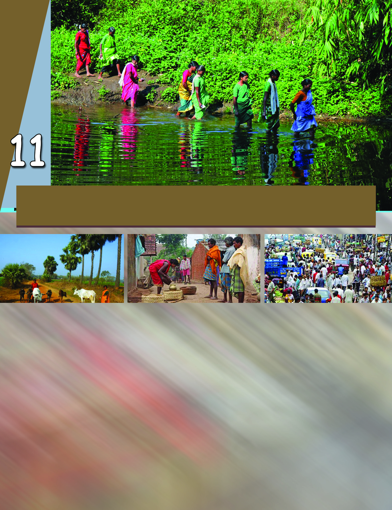
Page 62


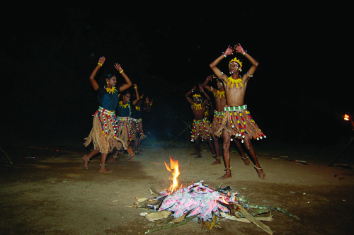
Social Science
158
Diversity in Social Life
12345678901234567890123456789012123456789012345678901234567890121234567890123456789012345678901
12345678901234567890123456789012123456789012345678901234567890121234567890123456789012345678901
12345678901234567890123456789012123456789012345678901234567890121234567890123456789012345678901
12345678901234567890123456789012123456789012345678901234567890121234567890123456789012345678901
12345678901234567890123456789012123456789012345678901234567890121234567890123456789012345678901
12345678901234567890123456789012123456789012345678901234567890121234567890123456789012345678901
12345678901234567890123456789012123456789012345678901234567890121234567890123456789012345678901
This picture is related to a tribal
community in Kerala.
Tribes have unique lifestyles. They are the
descendants of the ancient human
societies of our country. Now they are
generally confined either to forests and
hills or to the interior parts and isolated
valleys.
You might have heard of the different tribes in Kerala. Try to
recollect the names of a few tribal communities.
Paniyar
Kurichyar
As per the 1976 amendment
of the Scheduled Caste/
Scheduled Tribe Act, there are
35 tribal groups in different
parts of Kerala. The Paniyar
tribe scattered in different
districts is the largest.
Tribal communities
of Kerala
A group of people who live in
a particular area and speak a
language unique to them is
called a tribe. They follow
unique customs and rituals.
Tribe
Tribal Community
Features of a Tribal Community
Let us try to identify the features of the tribal
communities.
Generally the tribal settlements are located in
the hills, forests or isolated valleys. Each tribal
group lives together in a particular area. Their
lifestyles are totally different from that of other
communities.
Page 63

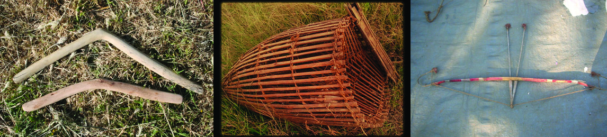
Standard VI
159
Diversity in Social Life
Traditional type of cultivation and gathering of forest
products are the means of living of these tribes. Many of
them are engaged in their traditional artisan works.
Every tribal society has its own language. These dialects
have no script.
Listed below are a few words used by the Malaya tribes of Kerala.
These are words indicating family relations. Aren't they similar
to what we use today?
The tribes have their own peculiar lifestyles. They live in close
contact with the nature. Geographical features have an important
role in formulating the social life of these people.
Observe the following pictures.
Vendiyaaru - wife
Vetharu
- husband
Appan
- father
Peppan
- grandfather
Molaru
- daughter
Monaru
- son
Aachi
- elder sister
Chattan
- elder brother
1 .....................................................................
2 .....................................................................
3 .....................................................................
Page 64

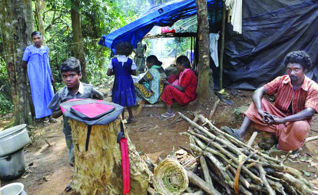

Social Science
160
Diversity in Social Life
What do you think the tribes use these implements for?
Write their uses below each of the pictures.
Isn't it clear that the implements of the tribes are related to their
surroundings?
The tribes were not of the habit
of recording their history or
recording the knowledge they
acquired. Hence, their myths,
folk songs, and local knowledge
are not that familiar to others.
Their ethnic art forms and rituals
still prevail, though with changes.
Read a nature song of the
'Malaveda tribe' in Kerala.
C®-®-sa¥p sNbvtX-teem
Hcp ao¥p-NØp t]mtb-teem
NØ-Ωo¥p F¥p sNbvtX teem
Hcp ]c-¥p-dm-©n-t∏mtbteem
B ao¥p F¥p sNbvtX-teem
Ccp-fp-a-dn¥p t]mtb-teem
AΩ-c-sa¥p sNbvtX-teem
sNdp-ao-¥p-Xm\pw t]mtb-teem
Ie-ºp-tgev Xm¥p-t]m-tb-teem
Ie-ºp-tgev Xm¥p-t]m-tb-teem
Collect such tribal folk songs prevalent in Kerala and present
them in your class.
Page 65

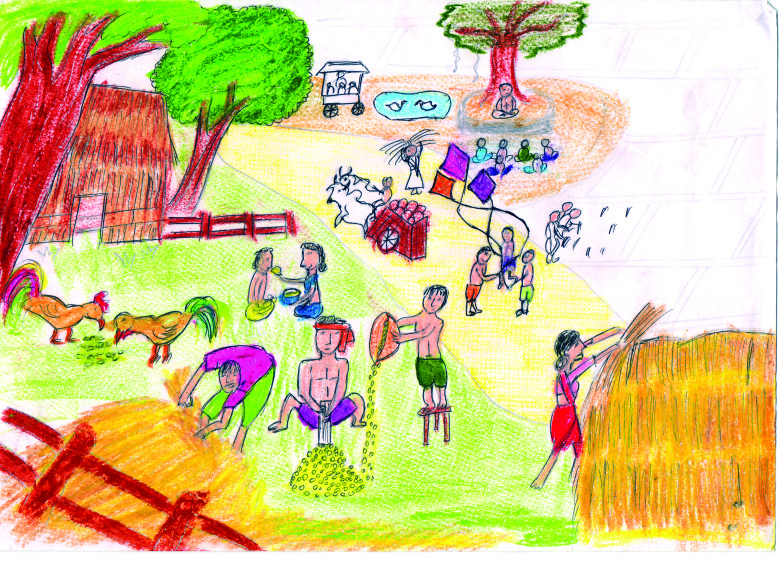
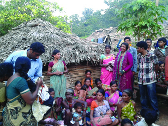
Standard VI
161
Diversity in Social Life
The place where the tribal people live
together is known as ooru. Each ooru has a
leader. People respectfully call him
oorumooppan. The mooppan or a group of
senior members including the mooppan
look after the administration of the ooru.
Either the mooppan or the elderly group will
have the supreme power in taking decisions
on matters like marriage, other disputes,
customs, rituals, etc.
Visit your nearby tribal village (ooru), if any, and observe the
features of their life.
Rural Community
Given below is a picture drawn by Meena, an eleven-year old
girl. The theme of the drawing is her village. Observe the picture
carefully. What are the peculiar features of the lifestyles she
has depicted? List them.
Page 66


Social Science
162
Diversity in Social Life
Activities related to agriculture
...............................................................................................
...............................................................................................
...............................................................................................
...............................................................................................
Other aspects
...............................................................................................
...............................................................................................
...............................................................................................
...............................................................................................
What do you understand about Meena's community from these
features? What will you call such a community ? List the major
features of a rural community.
Let us examine the features of a traditional rural society.
People of rural areas are close to each other and know
each other.
Their clothings are simple and so are their lifestyles.
Agriculture and allied activities are the important
occupation of traditional rural communities.
Cattle rearing and handicrafts are also their means of living.
Page 67


Standard VI
163
Diversity in Social Life
12345678901234567890123456789012123456789012345678901234567890121234567890123456789012345678901
12345678901234567890123456789012123456789012345678901234567890121234567890123456789012345678901
12345678901234567890123456789012123456789012345678901234567890121234567890123456789012345678901
12345678901234567890123456789012123456789012345678901234567890121234567890123456789012345678901
12345678901234567890123456789012123456789012345678901234567890121234567890123456789012345678901
12345678901234567890123456789012123456789012345678901234567890121234567890123456789012345678901
12345678901234567890123456789012123456789012345678901234567890121234567890123456789012345678901
12345678901234567890123456789012123456789012345678901234567890121234567890123456789012345678901
Can you identify some of the occupations
that were prevalent in villages?
$ Pottery
$
$
$
$
$
Joint family system had great importance in traditional
villages.
Many rural joint families had their own traditional
occupations undertaken by their clan.
Villages give importance to neighbourhood relations. They
share and care for each other's happiness and sorrow.
Generally all of them take part in rituals and festivals.
Villagers help others and cooperate with each other.
Festivals have a great place in the village life. Harvest
festivals were the major celebrations in the villages.
India continues to be a land of villages. But many of the villages
are getting transformed into towns and cities. It is also noticed
that many fetaures of traditional villages are vanishing now.
Changing Villages
Can you trace the changing face of our villages? What are the
changes you can identify in the modrn villages?
Many of the villages do not retain their original form any more.
Villages transform into towns, towns into cities, and some cities
to metro cities. The cities attract the village folk, offering better
prospects in employment, education, etc. People migrate on
large scale to cities like Mumbai, Delhi, Kolkata, Chennai,
Bengaluru, and Kochi.
Page 68

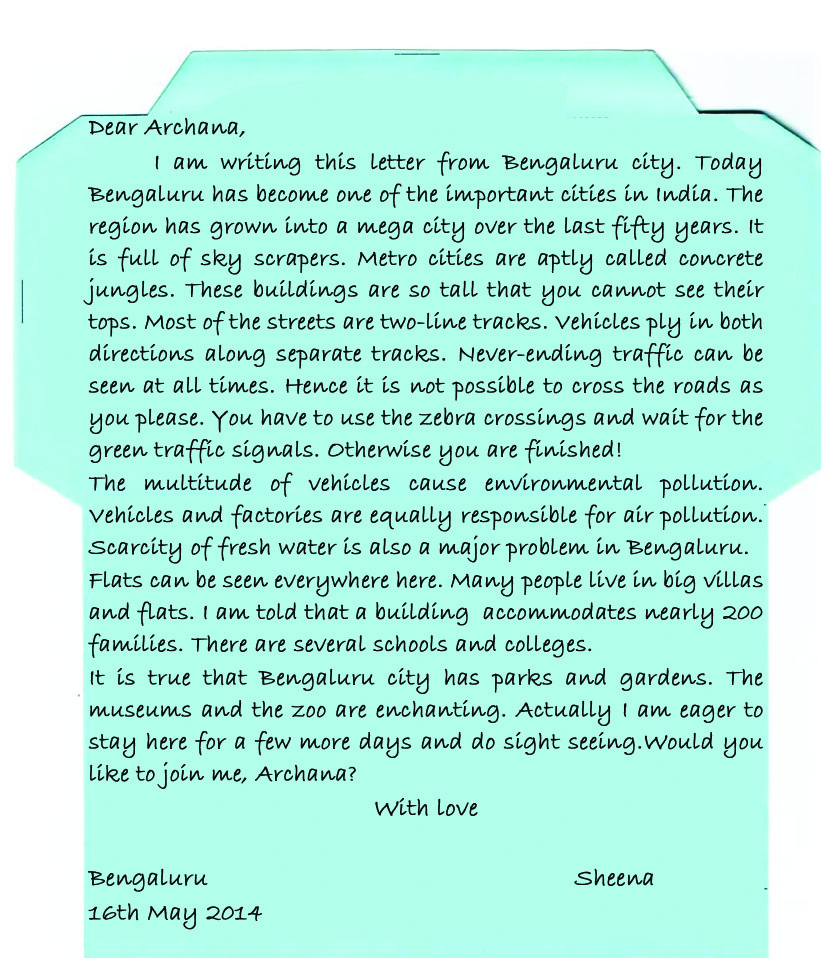

Social Science
164
Diversity in Social Life
Urban Community
Have you ever visited a metro city?
Read the letter sent by Sheena, a sixth standard student, to her
friend Archana.
Observe your village/nearby village and find out how they are
different from the traditional villages discussed above. Prepare a
note on it.
Page 69


Standard VI
165
Diversity in Social Life
Haven't you got the picture of a city when you read Sheena's
letter? Let us prepare a chart showing the peculiar features of
cities.
Features of cities
Centre of diversities
- Speak many languages
- Wear different clothes
- Follow diverse food habits
Land of different occupations
- Occupations related to industry and trade
- Differnet socio-economic classes are formed
based on occupations
- Different occupations give birth to different
labour organisations.
Centre of large buildings
- Flats
- Malls
- Supermarkets
- Bungalows
Urban lifestyles
- Fashion
- Modern lifestyles
- Diverse lifestyles
High population density
Slums
Page 70

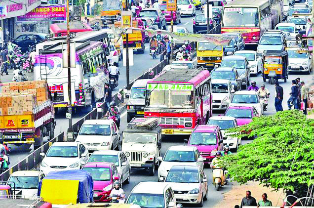

Social Science
166
Diversity in Social Life
12345678901234567890123456789012123456789012345678901234567890121234567890123456789012345678901
12345678901234567890123456789012123456789012345678901234567890121234567890123456789012345678901
12345678901234567890123456789012123456789012345678901234567890121234567890123456789012345678901
12345678901234567890123456789012123456789012345678901234567890121234567890123456789012345678901
12345678901234567890123456789012123456789012345678901234567890121234567890123456789012345678901
12345678901234567890123456789012123456789012345678901234567890121234567890123456789012345678901
12345678901234567890123456789012123456789012345678901234567890121234567890123456789012345678901
12345678901234567890123456789012123456789012345678901234567890121234567890123456789012345678901
Problems in Cities
Cities attract many. But, there are reasons for
cities to be disliked as well. Why? Look at
this picture.
The picture shows the traffic congestion in a
city. The multitude of vehicles causes air
pollution. This leads to many diseases.
It is a reality that cities possess many
facilities as well. But, do you know that cities
are also centers of several problems?
Some people find it tough to live in cities.
Both the upper class, who enjoy all comforts in life, and the
poor lower class in slums live in the cities. Many of the problems
in the cities affect all of them.
Let us find them out.
Remedies to the
problems in
cities
systematic planning
eco-friendly constructions
housing policy
basic facilities for making life easy
Collect news items from the newspapers regarding the problems
in cities. Prepare and present a collage in the class using news
on traffic blocks, slums, use of drugs, and crimes.
What are the solutions to the problems in the cities and villages?
Discuss in groups. You can use the following chart for
discussion.
Page 71

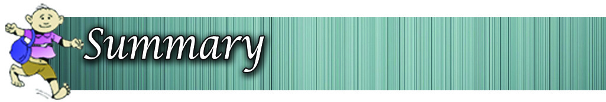

Standard VI
167
Diversity in Social Life
Different styles of life
Features
Tribal
community
Village
community
Urban
community
Features of
traditional
villages
Changes occurred
in rural village
societies
Features
Remedial measures
Urban problems
Majority of the tribal communities live in the hilly regions
or other remote areas.
The tribal communities have unique culture and lifestyles.
The language and culture of the tribal societies are
transmitted orally.
Primary relations, agro-based occupations, importance of
neighbourhood and family relations, influence of festivals,
etc. are the features of villages.
Page 72


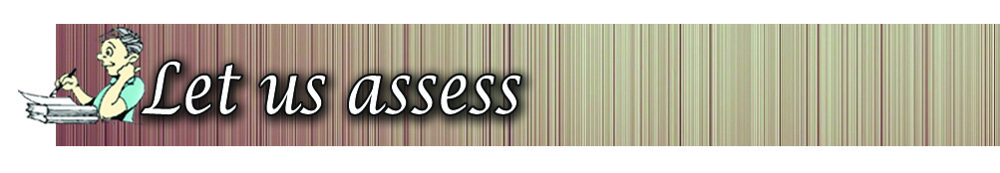
Social Science
168
Diversity in Social Life
Social diversity, division of labour, and social mobility
are the features of urban society.
Slums, pollution, traffic congestion, etc. are the major
urban problems.
Most of the problems in cities can be solved by systematic
planning.
The learner
recognises and explains the features of tribal communities.
recognises and analyses the features of rural community.
recognises and explains the changes that occured in rural
society.
identifies the features of urban community and analyses
them by comparing with that of rural community.
identifies the problems of urban society and suggests
solutions.
What are the features of tribal society?
Identify and explain the changes that have occurred in
rural society.
Urban life is hell. Do you agree with this statement?
Justify your answer.
Page 73


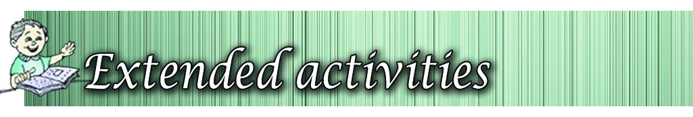
Standard VI
169
Diversity in Social Life
Rural society
Urban society
$
$
$
$
$
$
$
$
Compare and list the features of rural and urban
communities.
Visit a nearby city and prepare a report on the social
problems exisitng there.
Hints:
$ Traffic congestion
$ Slums
$ Shortage of housing facilities
$ Water scarcity
Prepare a magazine incorporating the art forms, songs,
etc. of tribal communities.
Page 74

Social Science
170
Diversity in Social Life
Completely
Partially
Need
improvement
Can explain the features of tribal society
Can explain the features of rural society
Can identify the features of urban society
Can identify and list the changes that
have occurred in the modern villages.
Can identify the differences between rural
and urban communities.
Can identify the problems faced by urban
society
Can suggest some measures to solve
urban problems
Self assessment
Self assessment
Self assessment
Self assessment
Self assessment